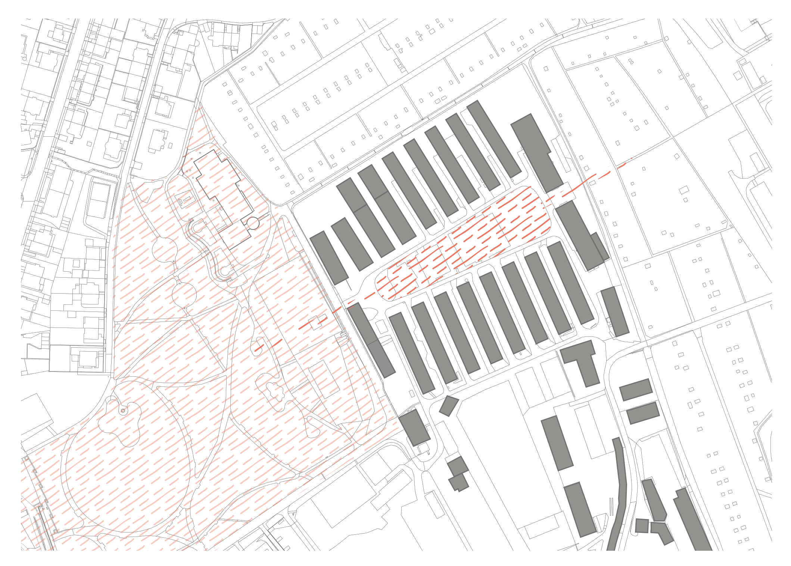
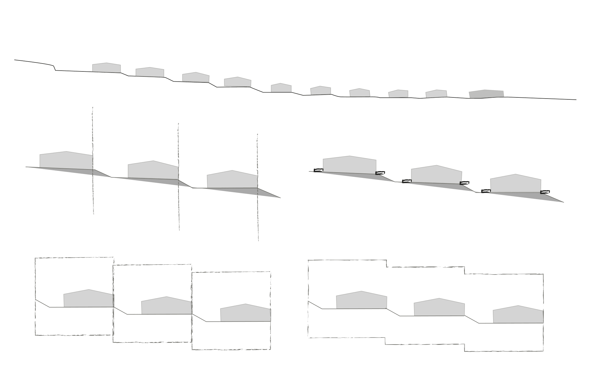
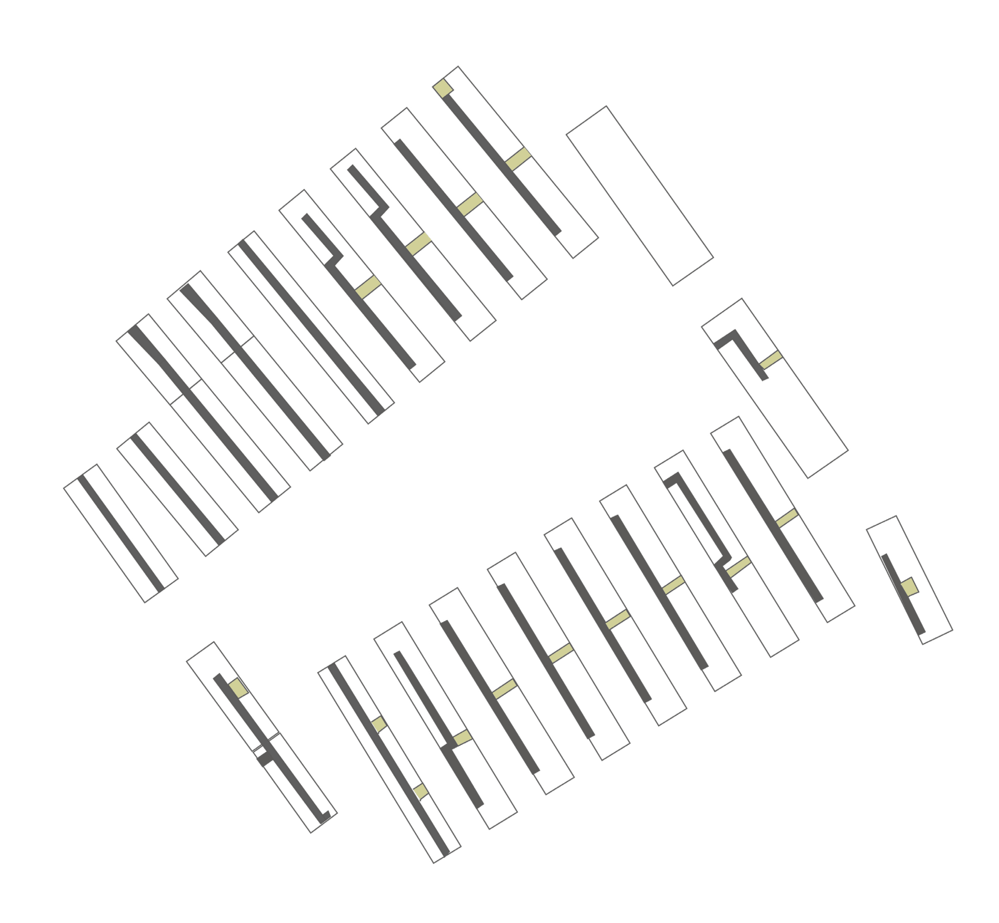
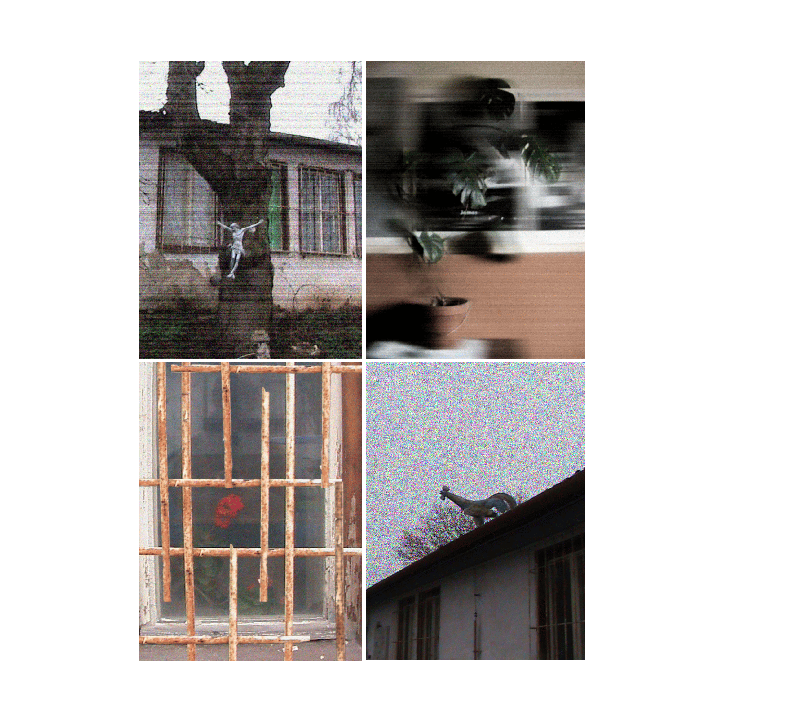
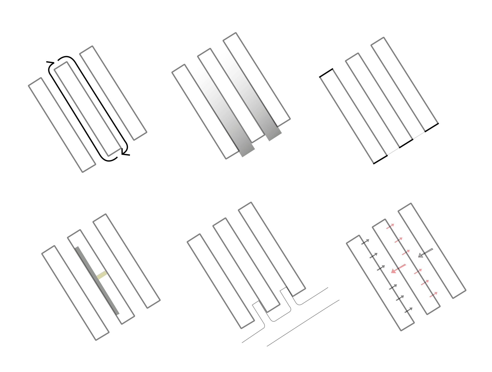
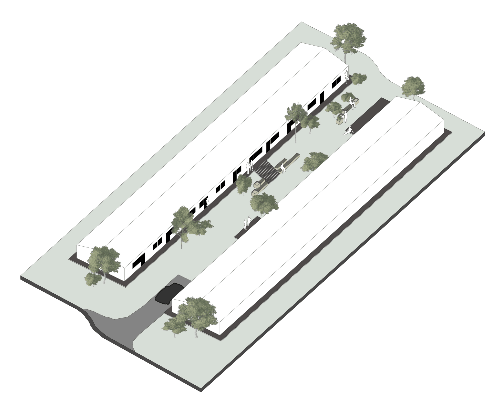
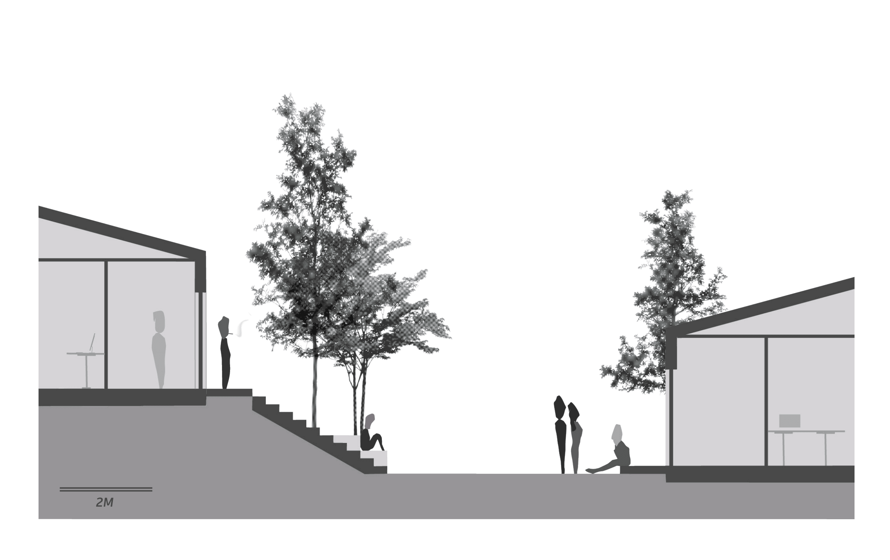
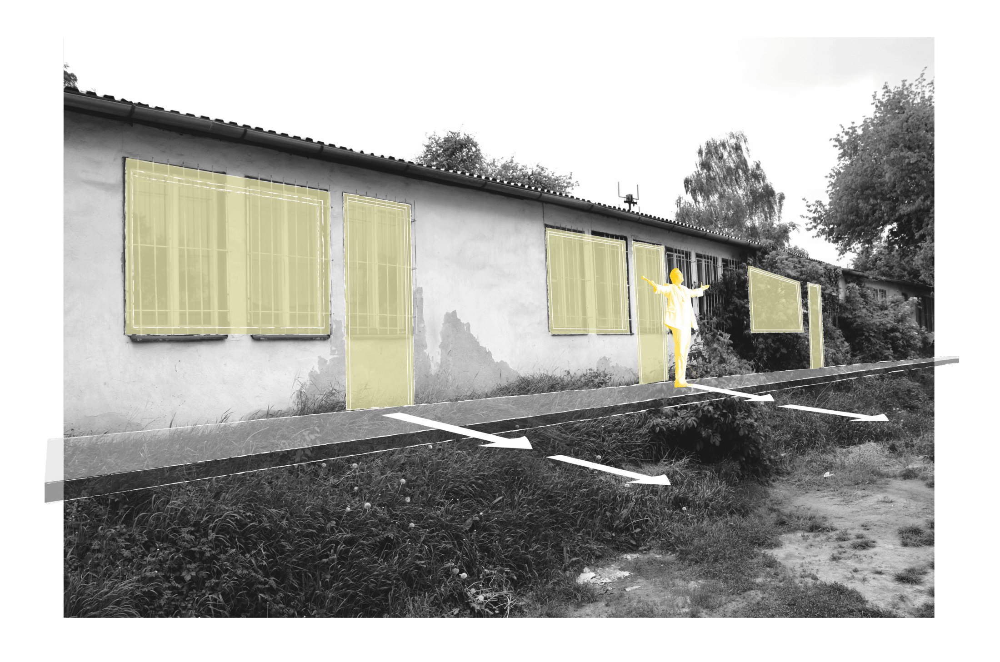

007 | 2024





2025
The project was developed under the guidance of Kristien Ring, Dipl.Ing. Architektin, Ing. arch. Adela Šoborová and Ing. arch. Anna Kotlabová
This studio project explores the Kraví Hora area in Brno, analyzing its existing conditions, identifying challenges, and highlighting the value of its creative community. The work focuses on understanding where to begin interventions and proposes the first key steps to activate the area, support social interactions, and strengthen community life.
Creative Community
Creative communities often emerge spontaneously, and it is important to preserve and support them when needed. In this case, the threat of disappearance strengthened the local community and revealed its value.
By creating spaces designed for social interaction and opening the area to the public, artists are given opportunities to present their work and engage with a broader audience.
This project examines an underused area near the city center that remains physically and socially disconnected despite its strong spatial potential. At its core is a spontaneously emerging creative community whose existence revealed the value of the site and the importance of preserving such fragile ecosystems.
The proposal responds by identifying the first necessary steps for activation. Extending the park axis into the site reconnects it to the wider urban context, while removing barriers between buildings allows the spaces in between to become shared and active. Improved circulation, new openings, and the possibility to move around the buildings support social interaction and visibility.
A gradual transition from public to private ensures that the intervention strengthens the community without disturbing the existing atmosphere. Rather than introducing large-scale changes, the project works through precise spatial adjustments that enable connection, accessibility, and collective use.
Design Principles
The proposal is guided by several key principles: improving circulation around the buildings, increasing permeability through new openings, activating the spaces between structures, and creating a gradual transition from public to private areas.
Working with the existing structural module ensures feasibility, while minimal spatial interventions allow the area to evolve without losing its identity.



